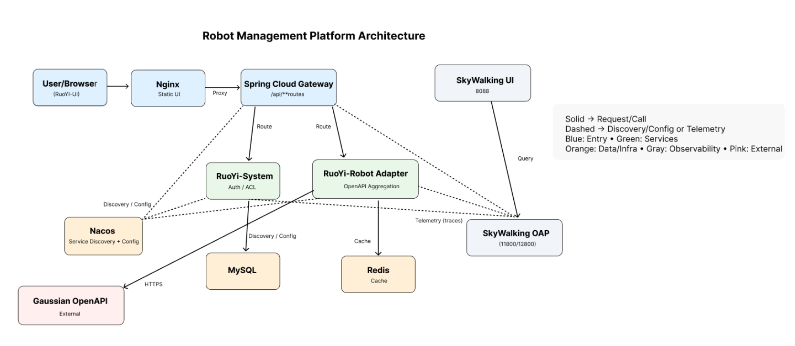
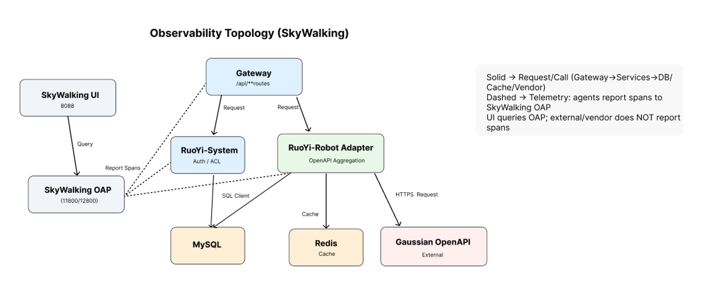
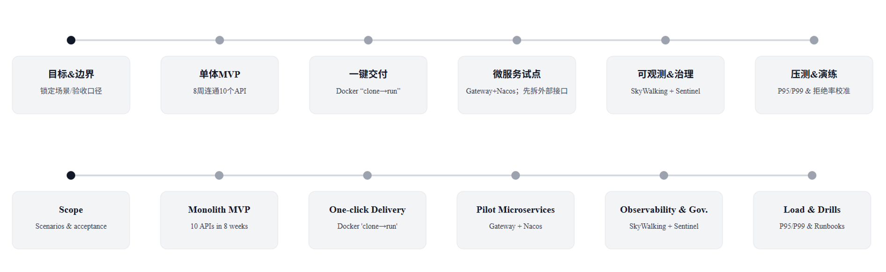

概览 Overview¶
本章给出整体脉络与阅读顺序；右侧为本页小目录（TOC）。
点击下方“推荐阅读顺序”中的任一条目可跳转到对应小节。
0.推荐阅读顺序¶
- What / Why — 明确背景与目标
- 单体 → 微服务 — 迁移策略与边界
- 架构总览 — 组件关系与设计权衡
- 项目阶段 & 里程碑 — 把“大目标”拆成“小节奏”
- OpenAPI 封装与稳定性 — 接口治理与容错
- SLO — 指标达成与持续改进
1.What / Why 机器人管理平台 — Robot Management Platform¶
一句话：统一管理机器人状态、地图/区域与临时任务，聚合多厂商 OpenAPI，向业务系统提供一致的接口与入口。
One line: Unified platform for robot status/maps/zones/ad-hoc tasks; aggregates vendor OpenAPIs and exposes a consistent gateway to business apps.
What（在做什么）¶
- 统一管理：机器人状态、地图/区域、临时任务
- 聚合开放接口：多厂商 OpenAPI（如 Gaussian），对外提供一致接口
- 统一入口与治理：Gateway 鉴权、审计、限流前置
Why（为什么从单体演进）¶
- 接口变化快、能力差异大：先把“接口聚合/任务下发”独立，便于快速迭代与回滚
- 峰值与抖动：需要限流/熔断与故障隔离，避免拖垮核心链路
- 多环境协作与交付：Docker 一键交付，服务独立发布/扩缩容
演进路线见下文「架构与演进（Architecture & Evolution）」。
2.单体 → RuoYi-Cloud 微服务（Monolith → Microservices）¶
背景 / 痛点¶
- 单体先行快速验证；规模上涨后发布影响面大、配置分散。
目标¶
- 平滑迁移，前端基本无感，分钟级回滚。
关键设计¶
- Gateway 路由：
/external/gs/** - Nacos：注册/配置（多环境）
- Docker Compose：一键多容器交付
难点与取舍¶
- DTO 抽到
ruoyi-api-robot - Controller 变薄 → 逻辑下沉到
GsOpenApiServiceImpl
指标与结果（示例，按你实际替换）¶
- 冷启动：〈原〉→〈现〉
- 回滚：〈小时〉→〈分钟〉
- p95：〈数值〉 ms
复盘¶
- 先交付后演进；统一 资源名 / 规则 / 异常体 / 日志字段。
3.架构总览（Architecture Overview）¶
形态：RuoYi-Cloud 微服务（Gateway + 业务服务），Nacos 做注册/配置，RabbitMQ（见异步化页）、MySQL/Redis 做数据与缓存，SkyWalking 做可观测闭环，Nginx 托静态前端。
1) 系统架构图¶

关系说明
- 入口：User/Browser → Nginx → Spring Cloud Gateway（/api/** 路由）
- 业务：RuoYi-System（鉴权/ACL）与 RuoYi-Robot Adapter（OpenAPI 聚合）
- 注册/配置：服务通过 Nacos 发现与拉取配置（多环境）
- 数据层：MySQL（业务数据）与 Redis（缓存/幂等/短期结果）
- 外部：Gaussian OpenAPI 通过 HTTPS 调用
- 可观测性：各实例向 SkyWalking OAP 上报 Trace；SkyWalking UI 仅做查询
- 连线含义：实线 = 请求/调用；虚线 = 发现/配置/遥测
2) 可观测性拓扑（SkyWalking）¶

观测口径
- 实线：真实调用链（Gateway → Services → DB/Cache/Vendor）
- 虚线：Agent 将 Span 上报到 OAP；UI 仅向 OAP 发查询
- 落点：在网关与服务两侧均可看到 Service/Endpoint 指标与 Trace
常用看板：吞吐/QPS、延迟（p50/p95）、错误率、慢调用占比、TopN Endpoint、trace→log 互查
4.项目阶段 / 演进路线 & 里程碑（Project Phases & Milestones）¶
1) 项目阶段 / 演进路线¶

参考路径：单体 MVP → Docker “clone→run” → 微服务试点（Gateway + Nacos） → 观测/治理（SkyWalking + Sentinel）。
2) 里程碑 & 可量化产出（示例）¶
| 阶段 | 关键产出 | 指标/信号 |
|---|---|---|
| 单体 MVP | 10 个 OpenAPI 联调；核心路径打通 | 联测一次通过；核心路径成功率 ≥ 99.2% |
| 一键交付 | Compose + 数据卷 + 首启 SQL；标准化镜像/脚本 | 新环境就绪 ≤ 12 分钟；同仓部署成功率 6/6 |
| 微服务试点 | Gateway + Nacos；聚合/下发先拆；回滚策略 | 模块独立发布；回滚 ≤ 5 分钟；窗口 ↓50% |
| 可观测/治理 | Trace；限流/熔断；统一异常/超时/连接池 | trace→log ≥95%；定位 12→3 分钟；拒绝 ≤1.5% |
| 压测/演练 | 阈值表 & Runbook；容量/故障演练 | 峰值 QPS ≥120；P99 ≤900ms；错误 ≤1% |
5.Gaussian OpenAPI 封装与稳定性治理（OpenAPI & Stability）¶
背景 / 痛点¶
- 厂商 API RT/错误不稳，调用方易被拖慢。
目标¶
- 监权/重试/幂等/Trace 统一；双层保护（网关 + 方法级）；读多写少的读路径支持缓存兜底。
关键设计¶
GsOpenApiServiceImpl+@SentinelResource（资源名与 Nacos 规则一致）- Nacos 下发
Flow/Degrade规则 RestTemplate：超时/连接池设置，禁用自动重试
难点与取舍¶
- 网关 vs 应用谁先挡：压测时放宽网关阈值，观察熔断位置（优先限流）。
指标与结果（示例）¶
- 突发下 429 快速失败；p95 〈数值〉 ms；读接口降级返回最近数据。
复盘¶
- 限流优先于熔断；统一异常体/日志字段便于排障。
相关链接¶
- 运行效果（Live Demo）: live-demo
- 可观测性（SkyWalking）: observability
- 稳定性（Sentinel）: stability-sentinel
- 异步化（RabbitMQ）: mq-async
6.Service Level Objectives (SLO) · 服务等级目标¶
Scope 范围：Gateway（Spring Cloud Gateway）+ Robot Service。
Window 统计窗口：28 天（月度）。
Success 口径：HTTP 非 5xx 且业务code==0计成功；策略性 429（限流）不计失败，单独跟踪其比例用于容量与阈值校准。
Latency 延迟：默认以 Gateway 入站→响应发出 的时长统计。
📈 SLO（中文）¶
1) 指标表¶
| 用户旅程 / 接口 | SLI | 目标值 | 说明 |
|---|---|---|---|
机器人状态查询 GET /external/gs/status/** |
成功率 ≥ 99.9% | 月度达标 | 网关限流在前；单实例稳定 QPS × 0.7 预留冗余 |
| P95 < 300ms（P99 < 800ms） | 月度达标 | 客户端通常 1–2 次退避重试 | |
地图列表 GET /maps/list/** |
成功率 ≥ 99.9% | 月度达标 | 稳定读；缓存/多副本 |
| P95 < 400ms | 月度达标 | 接口基线 | |
下发任务（异步受理）POST /external/gs/task/** |
受理成功率 ≥ 99.5% | 月度达标（≈3.6h 预算） | 入库+入队成功计为“受理成功”；幂等键 taskId |
| 受理 P95 < 1s | 月度达标 | 同步返回“已受理”；执行 ACK 不纳入本 SLO | |
| WebSocket 状态推送 | 断线后恢复：99% < 3s | 月度达标 | 自动重连；stale 触发告警 |
2) SLI 统计口径¶
- 成功率 = (总请求 − HTTP 5xx − 业务失败码) ÷ 总请求；业务失败码以统一
code字段为准。 - 延迟：统计 P50 / P95 / P99（Gateway 入站→出站）；必要时补充服务内子跨度。
- 受理成功率（异步）：HTTP 202/200 且入库+入队成功才计成功（需服务内埋点）。
- WebSocket 恢复：从断开到重新收流（心跳/订阅确认）的时长分布。
3) 保护阈值（与 Sentinel 规则对齐）¶
- 慢调用阈值
τ = min(1000ms, 1.2 × 当前基线 P95) - 统计窗口 10s；最小样本数 ≥ 20；慢调占比 ≥ 50% → 打开熔断
- Open 30s；Half-Open 探测 5–10 请求
- 入口限流：优先在 Gateway 对
/external/gs/**做 API 组限流（命中统一 429）
4) 告警与处置（把 SLO 变成操作）¶
- 错误预算：目标 99.9% ⇒ 月度预算 0.1%
- 燃尽告警（任一满足即告警）：
- 1 小时消耗 > 10% 预算 ⇒ P1，自动切 降级/限流回退组
- 6 小时消耗 > 20% 预算 ⇒ P1 升级，灰度回滚或摘除不健康实例
- 发布管控：发布后 15 分钟内若 P95/P99 恶化且错误率超阈 ⇒ 暂停灰度/回滚
- 流量治理：Gateway 限流配额按 5%→30%→50%→100% 梯度放大；持续恶化时分级熔断并提供稳定兜底
5) 观测与数据来源¶
- SkyWalking：Trace/指标（请求数、错误、分位延迟）
- 统一日志：按
traceId串联，结构化记录 429/503/超时字段 - Nacos：
*-gw-api-defs/*-gw-flow-rules分组，支持灰度与一键回滚
6) 例外¶
- 异步任务的执行结果不计入“受理成功率”，另立“任务执行 SLA”
- 网外网络问题在统计中标注“外部原因”维度用于复盘，不从工程侧强行剔除